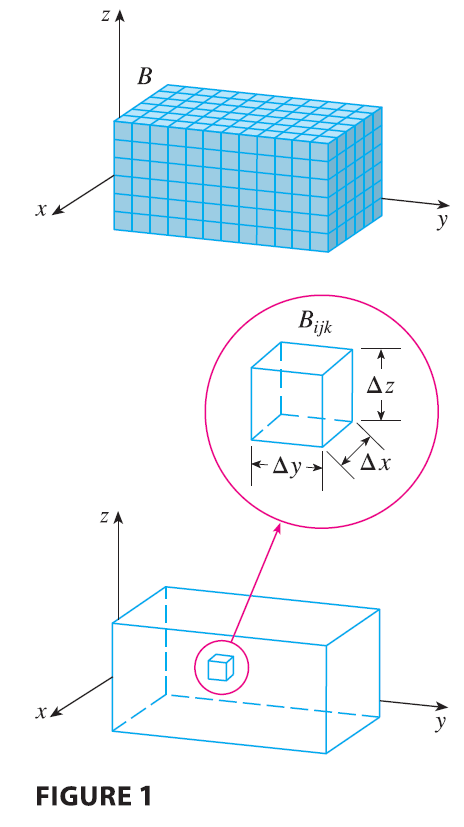

Just as we defined single integrals for functions of one variable and double integrals for functions of two variables, so we can define triple integrals for functions of three variables. Let’s first deal with the simplest case where \(f\) is defined on a rectangular box: \[ B = \{(x, y, z) | a \le x \le b, c \le y \le d, r \le z \le s\} \tag{1} \] The first step is to divide \(B\) into sub-boxes. We do this by dividing the interval \([a, b]\) into \(l\) subintervals \([x_{i-1}, x_i]\) of equal width \(\Delta x\), dividing \([c, d]\) into \(m\) subintervals of width \(\Delta y\), and dividing \([r, s]\) into \(n\) subintervals of width \(\Delta z\). The planes through the endpoints of these subintervals parallel to the coordinate planes divide the box \(B\) into \(lmn\) sub-boxes \[ B_{ijk} = [x_{i-1}, x_i] \times [y_{j-1}, y_j] \times [z_{k-1}, z_k] \] which are shown in Figure 1. Each sub-box has volume \(\Delta V = \Delta x \Delta y \Delta z\).
Then we form the triple Riemann sum \[ \sum_{i=1}^l \sum_{j=1}^m \sum_{k=1}^n f(x_{ijk}^*, y_{ijk}^*, z_{ijk}^*) \Delta V \tag{2} \] where the sample point \((x_{ijk}^*, y_{ijk}^*, z_{ijk}^*)\) is in \(B_{ijk}\). By analogy with the definition of a double integral (15.1.5), we define the triple integral as the limit of the triple Riemann sums in (2).
Definition 3 The triple integral of \(f\) over the box \(B\) is \[ \iiint_B f(x, y, z) dV = \lim_{l,m,n \to \infty} \sum_{i=1}^l \sum_{j=1}^m \sum_{k=1}^n f(x_{ijk}^*, y_{ijk}^*, z_{ijk}^*) \Delta V \] if this limit exists.
Again, the triple integral always exists if \(f\) is continuous. We can choose the sample point to be any point in the sub-box, but if we choose it to be the point \((x_i, y_j, z_k)\) we get a simpler-looking expression for the triple integral: \[ \iiint_B f(x, y, z) dV = \lim_{l,m,n \to \infty} \sum_{i=1}^l \sum_{j=1}^m \sum_{k=1}^n f(x_i, y_j, z_k) \Delta V \] Just as for double integrals, the practical method for evaluating triple integrals is to express them as iterated integrals as follows.